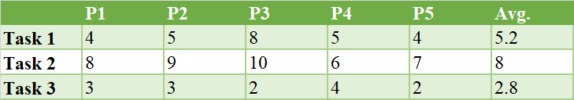
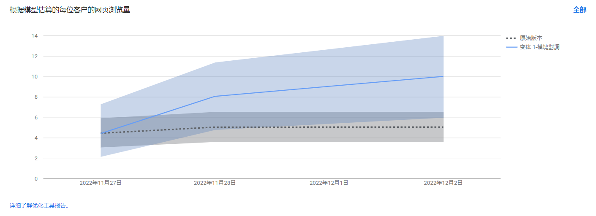
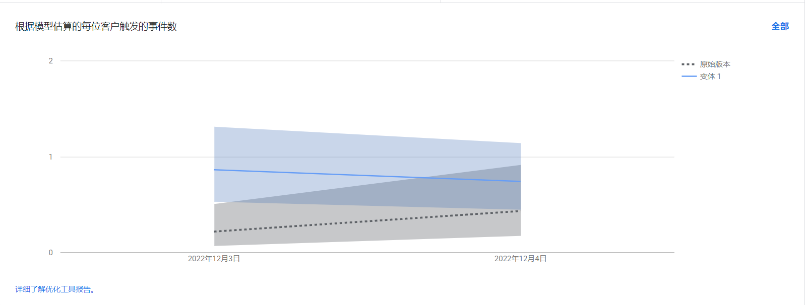

🐱爲食貓 Usability Test & A/B Test
Assignment Ⅴ · by Luo YinThe proposed solution will focus on the development of a community (paid subscription-based) platform that serves to connect mainland students studying in Hong Kong with mainland prepackaged food manufacturers/companies. The “hook” is the free home-styled recipes to attract student users. While this platform earns money from making membership fees and the profits from acting as the middleman. The membership system can provide users with more discounts, including free delivery fees, and home delivery when up to 200HKD. This can save their time and money on the purchase.
To place an order of pre-packaged food is the most important functional requirement that needs to be validated. Both the usability test and A/B test will be conducted to obtain feedback for the validation. The usability test can provide qualitative responses from 5 chosen users from the target persona group regarding the “why”, reasons they articulated verbally in the test engagement, and the AB test results can provide quantitative responses coming from a broader audience base regarding the “what” — whether people really click the button to buy or not.
Three usability tasks were designed to test the ease of use in purchase:
1. Where would you click to be redirected to the purchase page?
2. How would you get more details about the products?
3. Buy the product.
Three post-test questions were also designed to obtain recommendations for improvement:
1. Please rate the overall process: 5 as very satisfied, 1 as very dissatisfied
2. What difficulties did you encounter in the process?
3. What you expect to know from the product page?
4. What you expect to know from the detail page?
5. How do you think the page can be improved?
A/B Test One:
The homepage includes the two most important functions of the website – the recipe function and the pre-packaged food purchase function. For one thing, the recipe function (free) attracts users to know more about the website and increases retention time. It may increase users' goodwill towards the site because it offers free recipes. For another, the pre-packaged food purchase function is essential for the monetization of the website. This A/B test is designed to see whether the display order on the homepage will influence the click rate of the pre-packed food purchase function.
The original version: the recipe function shows up first, then the prepackaged food purchase function.
The variant 1 version: the prepackaged food purchase function shows up first, then the recipe function.
A/B Test Two:
In this test, we check whether more information given on the sign-up page will increase the sign-up rate. This is because we assumed that there are two kinds of people visiting the sign-up page: the hesitators and the determinists. The former ones need more information/CTAs to complete the sign-up process. Therefore, more membership benefits would be provided in version one to test if more conversions would be achieved.
The original version: no membership benefits details would be given
The variant 1 version: membership benefits details would be given at the top of the page
The usability result can be seen as follows:
All participants completed three tasks successfully. As for the time to finish each task, task 2 took the longest time (mean= 8). This may be due to the unclear CTA in the product page – users have to have to click the picture to be redirected to the detail page (on the mobile), or to have their mouse hover on the picture (on the computer).
① Recommendations from participants:
For the design part:
1. Use filters, adjust the saturation, change the warmth, bump up the contrast, and use other photo editing techniques to make the images better fit in with the harmony of a web design.
2. The style of the product images should be more consistent.
For the function part:
1. Page loading speed is relatively slow.
2. Lack clear CTA to buy unless you move your mouse to the picture
3. The mobile version lacks a bottom to scroll to the top quickly.
② Comments from venue owners:
1. Can have some soft advertising in the recipe section so that the purchase rate could increase.
2. More information should be presented on the product detail pages.
The A/B test results can be seen as follows:
A/B Test One Result:
From the result, it can be suggested version 1 would have more chances to be clicked by users than the original version (see A/B test comparison picture).
A/B Test Two Result:
From the result, it can be implied that if membership benefits are highlighted again in the sign-up page, more users would like to register for our membership plan (see A/B test comparison picture).
Combing the results from the usability test and A/B test, as well as recommendations, put forward by interviewees, the prepackaged food purchase function would be shown up first, and more membership benefits would be highlighted again on the sign-up page (to be realized in the final project). In this way, users can know what the main function this website can offer as well as place an order as soon as possible – a win-win situation for both the website and the users.
You can find out more about this topic here.